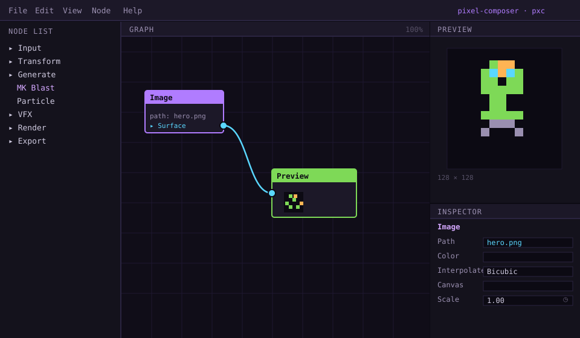
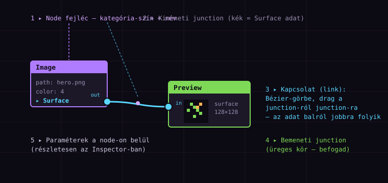
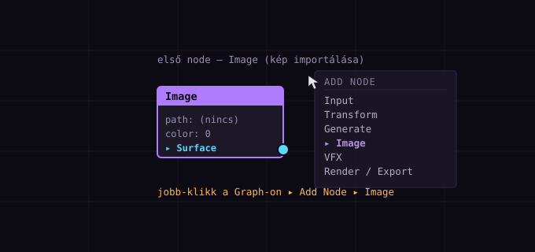

Ismerd meg a Pixel Composer-t
— node-alapú VFX pixel arthoz
A Pixel Composer nem rajzolóprogram: egy node-gráf, ahol vizuális effektek (tűz, füst, részecskék, glow) procedurálisan, roncsolásmentesen épülnek fel. Ebben a tutorialban megismered a kezelőfelületet, létrehozod az első node-odat, betöltesz egy képet, és össze is kötöd egy Preview node-dal — vagyis megérted az alapokat, amire minden későbbi lecke épül.
Mi az a Pixel Composer?
A Pixel Composer (röviden PXC) egy asztali alkalmazás (Windows / macOS / Linux), amivel pixel art vizuális effekteket lehet készíteni — de nem úgy, hogy pixelt kézzel rajzolsz. A lényege: node-okat kötsz össze egy gráfban, és a program a node-gráf alapján procedurálisan generálja a végeredményt.
Minden node egy művelet (képet betölt, színt módosít, részecskéket spawnol, blendel). A node-ok kimenete bemenete más node-oknak — az adat végigfolyik a gráfon. Mivel minden külön node, bármikor megváltoztathatsz egy beállítást, és az egész lánc automatikusan újraszámolódik. Az eredeti képed soha nem íródik felül.
Ezért a PXC workflow nem „rajzolj”, hanem „építs gráfot → állíts paramétert → exportálj”.
PXC vs. Aseprite — nem konkurensek
A legtöbb kezdő úgy találkozik a PXC-vel, hogy „pixel art programot” keres. Fontos tisztázni a szerepköröket:
| Aseprite | Pixel Composer | |
|---|---|---|
| mit csinál | Sprite-okat rajzol, frame-by-frame animál | Procedurális VFX-et generál meglévő képre |
| hogyan | Kézi ecset, timeline, onion skin | Node-gráf, paraméter-automatizáció |
| tipikus feladat | Karakter, tile-set, ikon | Tűz, robbanás, füst, glow, részecskék |
| fájl | .aseprite | .aseprite-ot beolvas, PNG/spritesheet-et ír ki |
Egy valós pipeline így néz ki: Aseprite-ben megrajzolod a karaktert → PXC-ben ráteszed a tüzet/glow-t/reszecske-effekteket → kimentesz spritesheet-et → betöltöd a játékmotorba.
Ttanasart-pt/Pixel-Composer). Steam-en és itch.io-n is telepítheted. Nincsenek fizetős funkciók — minden export (PNG, spritesheet, gif) nyitva van. Ezt a tutorialt a stabil 1.21-es ágon teszteltük.
Ez a tutorial a hivatalos „Getting Started” leckét követi, magyarul, kibővítve interaktív demókkal és a leggyakoribb kezdő csapdákkal.
Telepítés és elindítás
Három forrásból telepítheted — mindegyik ugyanazt a szoftvert adja:
- Steam: store.steampowered.com — automatikus frissítések, ajánlott ha amúgy is használod a Steam-et.
- itch.io: makham.itch.io/pixel-composer — a bal oldali sávból is letöltheted. Az itch.io app szintén frissít.
- GitHub: github.com/Ttanasart-pt/Pixel-Composer — release-ek, forráskód, hibabejelentés.
Telepítés után indítsd el. Egy üres ablak fogad, benne egy üres Graph panellel — ez a vászon, amin a node-okat fogjuk elrendezni. Mielőtt bármit csinálunk, értsük meg, mit látunk.
A munkakörnyezet — panelkörkép
A PXC ablak négy fő zónára oszlik. Mielőtt bármihez nyúlnál, ismerd fel, hogy melyik panel mit csinál — az egész tutorial során ezeket fogjuk használni:

┌──────────┬───────────────────────────────────┬───────────────────┐ │ NODE LIST │ GRAPH (fő vászon) │ PREVIEW │ │ Input │ ┌──────┐ ┌────────┐ │ ┌─────────────┐ │ │ Transform │ │Image│──▸│Preview│ │ │ pixel art │ │ │ Generate │ └──────┘ └────────┘ │ │ eredmény │ │ │ VFX │ ide húzod, kötöd a node-okat │ └─────────────┘ │ │ Render ├───────────────────────────────────┼───────────────────┤ │ Export │ │ INSPECTOR │ │ │ │ a kijelölt node │ │ (kategóriák│ │ paraméterei: │ │ szerint) │ │ Path, Color, │ │ │ │ Scale, ... + ◷ │ └──────────┴───────────────────────────────────┴───────────────────┘
- Node List (bal): a node-ok katalógusa, kategóriákra bontva. Itt keresed meg, mit szeretnél behúzni.
- Graph (közép): a fő vászon. Ez a szíve a PXC-nek — ide kerülnek a node-ok, ide húzod a kapcsolatokat.
- Preview (jobb-fent): a gráf kimenetének élő előnézete. Ahogy módosítasz valamit, ez frissül.
- Inspector (jobb-lent): a kijelölt node paraméterei. Itt állítod be a részleteket (fájlnév, szín, méret stb.).
A Graph panel — ahol a varázslat történik
A Graph a középső, legnagyobb panel. Ez egy végtelen vászon: zoomolhatsz (egérgörgő), pan-elheted (térköz lenyomva + húzás, vagy középső gomb). Ide kerülnek a node-ok, és ide rajzolod a kapcsolatokat köztük.
Egy node felépítése
Mielőtt létrehoznánk egyet, nézzük meg, mit fogunk látni. Minden node azonos szerkezetű:

| Rész | Mit jelent |
|---|---|
| Fejléc (színes sáv) | A node neve + kategória-szín. A szín segít tájékozódni: lila = Input, narancs = Transform/Generate, zöld = Render/Preview, cián = VFX. |
| Paraméterek (törzs) | A node beállításai (pl. path, color, scale). Részletesebben az Inspector-ban. |
| Junction (kör) | Csatlakozóaljzat. Jobboldali (kitöltött) = kimenet. Baloldali (üreges) = bemenet. A szín a adattípust jelöli. |
| Link (Bézier-görbe) | A kapcsolat két junction között. Drag-elve húzod egyikről a másikra. |
A PXC-ben a junction-ok színe nem dekoráció, hanem adattípust jelöl:
- Cián — Surface (kép/πixel-tömb): a leggyakoribb, ez az „áramló kép”.
- Lila — Struct / adat (pl. részecskék adata).
- Zöld — Buffer / numerikus.
- Narancs — Path / szöveg.
Egy link csak azonos típusú junction-ok közt húzható. Ha nem enged csatlakozni, azért van — a típusok nem matchelnek.
Az Inspector — paraméterek beállítása
Az Inspector a jobb alsó panel. A Graph-ban kijelölt node paramétereit mutatja. Ha kijelölsz egy node-ot (klikk a fejlécére), az Inspector azonnal azzal töltődik ki.
A legtöbb paraméter típusa egyértelmű:
- Szám — beírod vagy a csúszkával húzod (pl.
Scale: 1.00). - Legördülő — választasz egy opciót (pl.
Interpolate: Bicubic). - Fájlútvonal — kattintva fájlválasztót nyit (pl.
Path: hero.png). - Szín — kattintva színválasztót nyit.
Az Inspector minden paramétere mellett látható egy apró óra-ikont jelentő gomb (◷). Erre kattintva animációt adhatsz a paraméterhez — keyframe-eket, görbéket. Ez a PXC egyik legerősebb funkciója, a 3. tutorialban részletesen megnézzük. Egyelőre csak jegyezd meg, hogy ott van.
Node létrehozása — a jobb-klikk
Eljött a pillanat: hozzunk létre az első node-ot! Két mód van rá — tanuld meg mindkettőt, mert mindennap használni fogod:
- Jobb-klikk a Graph panel egy üres területén → felugrik az Add Node menü.
- A menüben tallózol a kategóriák közt (vagy gépelsz a keresőmezőbe), és kiválasztod a node-ot.
A másik módszer: a Node List-ből (bal panel) drag & drop-pal a Graph-ra húzod a node-ot. Gyorsabb, ha már tudod, mit akarsz.

image, blast, particle), és azonnal szűri a listát. Sokkal gyorsabb, mint a kategóriákban bújni — érdemes rászokni.
Kép betöltése: az Image node
A leggyakoribb kezdő node az Image — ez betölt egy képet (PNG, JPG, akár .aseprite) a gráfba, és Surface-ként (képként) kiadja a kimenetén. Minden más node erre épül.
- Jobb-klikk a Graph-on → Add Node ▸ Input ▸ Image.
- Létrejön egy
Imagenode, lila fejléccel. Jelöld ki (klikk a fejlécre). - Nézz az Inspector-ba (jobb alsó). Keresd meg a
Pathmezőt. - Kattints a
Pathmelletti gombra → fájlválasztó nyílik → válassz egy PNG-t (bármilyen, akár egy Aseprite export).
Miután kiválasztottad a fájlt, a node azonnal megmutatja a kép adatait (color, size), és a kimeneti junction-on (cián) megjelenik a Surface-adat.
Tipp: mit importálj most?
Ehhez a tutorialhoz elég bármilyen egyszerű PNG — egy 32×32 vagy 64×64 pixel art sprite a legjobb. Ha nincs kéznél, az OpenGameArt-on rengeteg ingyenes, CC-licencű pixel art van. A későbbi tutorialokban konkrét effekteket fogunk rátenni.
A Preview node — megjelenítés
Az Image node csak adatot termel — hogy lássuk is, kell egy Preview node (zöld fejléc, a Render kategóriában). Ez a node befogadja a Surface-t és megmutatja.
- Jobb-klikk a Graph-on → Add Node ▸ Render ▸ Preview.
- Létrejön a
Previewnode (zöld fejléc), egy baloldali üreges bemeneti junction-nel. - Ezen a ponton még üres — nincs mit mutatnia, mert nincs bekötve semmi.
A PXC-ben tetszőleges számú Preview node-od lehet — mindegyik egy-egy „ablak” a gráf egy pontjára. Gyakori minta: egy Preview közvetlenül az Image után (hogy lásd az eredetit), egy másik az effekt-lánc végén (hogy lásd az eredményt). Így egyszerre hasonlíthatod össze a „előtte / utána” állapotot.
Összekötés: az első link
Most jön a lényeg: összekötjük az Image kimenetét a Preview bemenetével. Ez a mozdulat — a link húzása — a PXC legalapvetőbb interakciója.
- Vidd az egeret az Image node jobb oldalán lévő cián kimeneti junction-ra (a kis kitöltött körre).
- Nyomd le a bal egérgombot, és húzd a Preview node baloldali bemeneti junction-ára (üreges kör).
- Engedd el — a két junction között megjelenik egy Bézier-görbe (a kapcsolat).
Ha minden jól ment, a Preview node azonnal megmutatja a képet — az adat „átfolyt” az Image-ből a Preview-be. Gratulálok! Ez az első node-gráfod. 🎉
Ha sikerül, a kép „átfolyik” a Preview-be — pont mint az igazi PXC-ben. Ha megszakítod (gomb felengedése máshol), a link eltűnik.
Mentsd el a projektedet!
Mielőtt továbbmész: File ▸ Save (vagy Ctrl+S). A PXC projektformátuma a .pxc — ez magát a gráfot tárolja (a node-okat, kapcsolatokat, paramétereket), nem pedig a képeket. A képek külső hivatkozásként maradnak, mint a játékmotorban egy asset. Ha áthelyezed a projektet, a képeket is vidd magaddal.
Összefoglaló & merre tovább?
Ezzel megismerkedtél a Pixel Composer alapjaival. Nézzük végig, mit tanultál:
| Fogalom | Tanultad |
|---|---|
| node-gráf | Non-destructive, procedurális VFX-építés node-ok összekötésével. |
| négy panel | Node List (katalógus) · Graph (vászon) · Preview (eredmény) · Inspector (paraméterek). |
| node felépítése | Fejléc (kategória-szín) + paraméterek + junction-ok (kimenet/bemenet, típus-szín). |
| node létrehozása | Jobb-klikk a Graph-on → Add Node (vagy drag a Node List-ből). |
| Image node | Betölt egy képet, Surface-ként adja ki. |
| Preview node | Megjeleníti a beérkező Surface-t (vagy dupla-klikk bármelyik node-on). |
| link | Junction-ról junction-ra húzva; balról jobbra folyik az adat; csak azonos típus köthető. |
Mielőtt a 2. részbe kezdenél, csináld végig ezt: tölts be egy saját képet az Image node-dal, kösd össze egy Preview-rel, és mentsd el .pxc-ként. Ez a projekt lesz a kiindulópontja a következő tutorialnak — ott ugyanezen a képren fogunk transformációt és animációt beállítani.
A sorozat következő részei
Ez a 1. része egy háromszintű (kezdő / közép / haladó) sorozatnak. A tervezett tematika:
- 2. rész — Node-ok és kapcsolatok mélyebben: transformáció, blend módok, több bemenet.
- 3. rész — Animáció alapok: keyframe-ek, interpoláció (linear/smooth/hold), loop.
- 4. rész — Import/Export workflow + spritesheet packelés (engine-integráció).
- 5. rész — A Clone node: a legnagyobb kezdő csapda.
- Később — MK Blast tűz/robbanás, részecskék, effectors, feedback loop, texture mapping, és egy Bevy-integrációs lecke is.